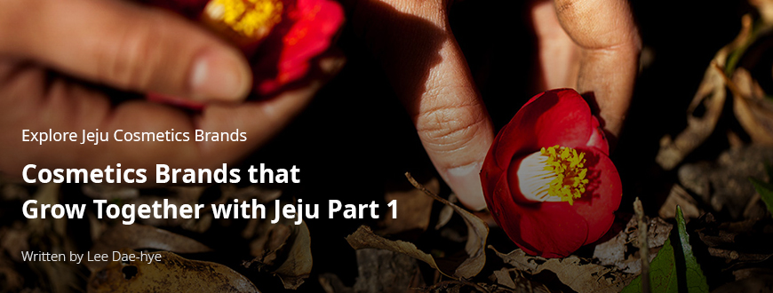
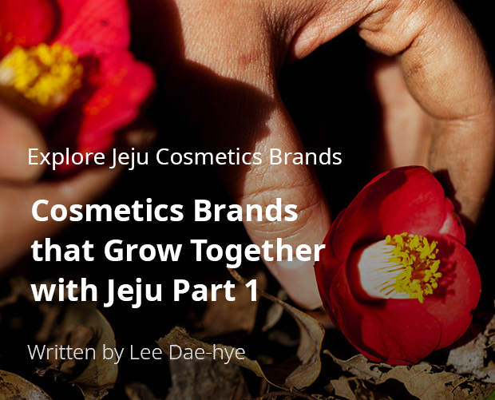
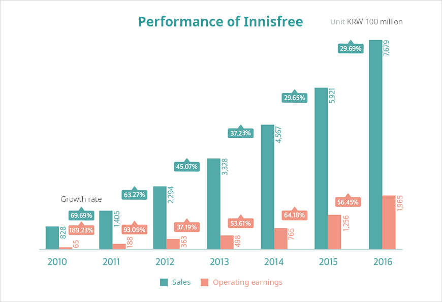

기획취재콘텐츠
- Home
- 제주라이프
- 기획취재콘텐츠
Cosmetics Brands that Grow Together with Jeju Part 1새로운 글




As Jeju has gained attention as a repository of cosmetics ingredients, the popularity of cosmetics products originating from Jeju has surged. Big cosmetics brands, such as Innisfree and Beyond, excitedly launched products using ingredients from Jeju. Made-in-Jeju cosmetics brands are also doing well. Jejuindi, that cultivates plants in Jeju for all its ingredients, and Accoje, that has a skincare line using various plants from Jeju such as echinacea and eleuthero, are two companies that have been actively using ingredients grown in Jeju and combining them with their brand story, expanding their presence to consumers from home and abroad as well as to visitors. As cosmetics ingredients from Jeju became more and more popular, a Korean original development manufacturer (ODM) company moved to Jeju with the purpose of finding and developing new ingredients to help lay a foundation for the further growth of the Jeju cosmetics ingredient industry as well as for the overall Jeju cosmetics industry.
Naturalist cosmetics brand Innisfree raising value of Jeju’s natural environment
The story of Innisfree, a cosmetics brand focused on naturalism (the practice of focusing on natural ingredients), and Jeju goes back several decades. The late Suh Sung-hwan, the founder of Amore Pacific, cultivated a green tea field on Jeju island, the best location for tea farming, with a commitment to “revive the traditional tea culture of Korea.”
- Green tea farm at Seogwang Tea Garden ⓒInnisfree -
Green tea leaves grown from the field cultivated by Amore Pacific were soon being brewed again as tea. The company studied green tea for several decades, discovered the possible use of green tea as a cosmetics ingredient, and finally made cosmetics with green tea. After launching Innisfree, Korea’s first cosmetics brand based on naturalism, the company’s “Green Tea Balancing Line” which uses Jeju green tea became a big hit and transformed the company into the leading cosmetics brand in Korea.
- Innisfree Green Tea Balancing Skincare Set ⓒInnisfree -
Starting with the Green Tea Balancing Line, Innisfree presented a total of fifteen lines that used ingredients grown in Jeju, such as volcanic clusters, cymbidium orchids, bija, camellia, canola honey, cherry blossoms, and hallabong. Whenever Innisfree launched a new product using a natural ingredient from Jeju, the ingredient came to the spotlight. Some ingredients—like cymbidium orchids, bija, camellia, volcanic clusters, and lava seawater—that already existed on Jeju but were unknown to the public are now well-known for their function and beauty together with the Innisfree brand. This was possible because there were efforts to study the unique environment of Jeju Island, explore effective ingredients for skin based on literature reviews, and develop the values and stories of ingredients differentiated from the mainland.
- Innisfree EcoScience Linkle Spot Essence Advertising Campaign ⓒInnisfree -
Based on tales saying that a whale eats sea mustard after giving birth, we introduced the effects of Jeju sea mustard. To highlight the regenerative energy of extracts of Jeju sea mustard and gulfweed from the clean Jeju sea, which is the core ingredient of Wrinkle Spot Essence, in our campaign we tell the story that ‘It is said that when a whale gives birth, that year will have a bad harvest of sea mustard.’ This highlights the regenerative power and purification functions from these sea plants.
- Chan-ho Han, Director of Innisfree Moeum Foundation -


Performance of Innisfree
| Category | 2010 | 2010 | 2012 | 2013 | 2014 | 2015 | 2016 |
|---|---|---|---|---|---|---|---|
| Sales(Growth rate) | 828 | 1,405(69.69%) | 2,294(63.27%) | 3,328(45.07%) | 4,567(37.23%) | 5,921(29.65%) | 7,679(29.69%) |
| Operating earnings(Growth rate) | 65 | 188(189.23%) | 363(93.09%) | 498(37.19%) | 765(53.61%) | 1,256(64.18%) | 1,965(56.45%) |

Innisfree opened its first shop in Shanghai, China in 2012. The brand captured the hearts of Chinese tourists, known as youker, by combining clean ingredients from Jeju and the image of Jeju as a favorite tourist destination of the Chinese people. In 2012 when Innisfree first entered the Chinese market, sales reached KRW 229.4 billion and operating earnings reached KRW 36.3 billion, which were up 63% and 93% YoY respectively. Since then, sales and operating earnings have continuously increased over 30% and 50% respectively.
Innisfree did not stop after launching and selling products that use ingredients and stories of Jeju. The brand spreads the values of Jeju and carries out various activities to contribute to vitalizing the regional economy.
Innisfree has been collaborating with various villages in Jeju under the name Beautiful Fair Trade. Beautiful Fair Trade is Amore Pacific’s fair trade initiative aimed at making positive contributions to the environment and society by observing three principles—safety of ingredients, environmental preservation, and contribution to the region—when selecting and purchasing ingredients.
- Chan-ho Han, Director of Innisfree Moeum Foundation -
- Dongbaek village ⓒInnisfree -
Innisfree’s Camellia line buys camellia petals collected from Dongbaek village located at Sinheung 2-ri, Namwon-eup Seogwipo-si Jeju-do, and bija fruits purchased from Songdang village in Gujwa-eup Jeju-si are used to make the Innisfree Bija line. Fair trade between Innisfree and Jeju gives mutual benefits: for the company, buying safe local ingredients and minimizing environmental impacts during the cultivation, processing, and transporting process; for the villages, achieving stable and ongoing sales of ingredients.
- Seogwang Tea Garden Innisfree Jeju House ⓒInnisfree -
Innisfree Jeju House at Seogwang Tea Garden is a cultural space where Jeju tourists continue to visit to taste and enjoy Jeju green tea. The house has teas and desserts made of Jeju green tea and fragrances using Jeju ingredients. It also carries Innisfree lines that are available exclusively in Jeju and lifestyle products that depict the beauty of Jeju. Every year, the Jeju Eco Healing Travel Book, which talks about the beauty of Jeju enjoyed with Innisfree, is published. In the “Jeju Logbook” series, which tells stories about the precious and beautiful nature of Jeju and the magical landscape of Gotjawal Forest and endeavors to protect the forest have been introduced.
- Innisfree Jeju Playbook 2015 to 2018 ⓒInnisfree -
Our experience center ‘Jeju House’ is also praised as an outstanding eco-friendly building in Jeju. It is now a famous travel destination. If Innisfree stores in urban areas offer small windows for communicating with nature, Jeju House is a giant path for communicating with nature. Various content connecting the brand, touring, and culture make the connection between Jeju and Innisfree more visible and closer.
- Chan-ho Han, Director of Innisfree Moeum Foundation -
- flagship store in the Middle East ⓒInnisfree -
As of March 2020, Innisfree presented various cosmetics lines using ingredients grown on Jeju to seventeen countries, including Korea. In February 2020, its first flagship store opened in the Dubai Mall in the UAE. The main motif of the store is inspiration from the nature of Jeju and Jeju’s heritage, which is found in its natural ingredients, highlighting the connection between Jeju and Innisfree.
Customers who have visited our flagship store in the Middle East have shown great interest in Jeju and the natural story of Innisfree. The design of the space that reminds you of Jeju’s beautiful natural environment lets customers experience Innisfree’s brand slogan, ‘Natural benefits from JEJU,’ even more deeply.
- Chan-ho Han, Director of Innisfree Moeum Foundation -
The connection between Innisfree and Jeju that has been built up over such a long time shows how a brand and a region can co-exist in a practical way.